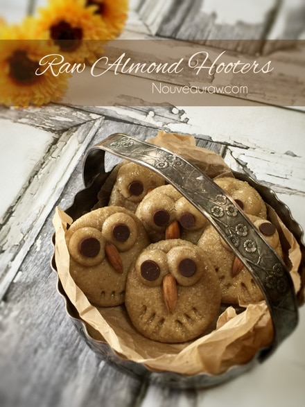
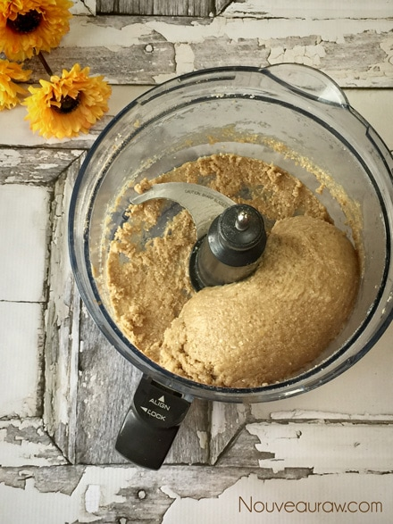
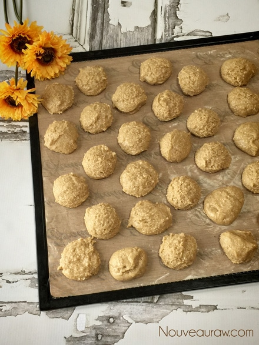
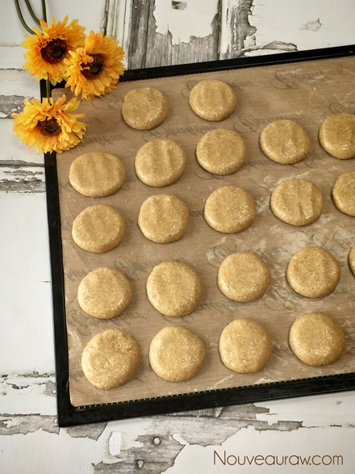
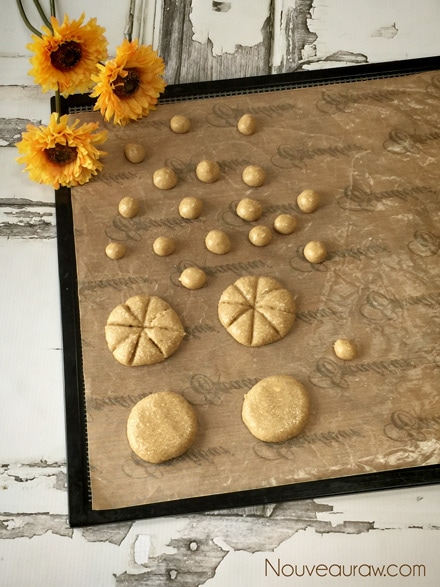
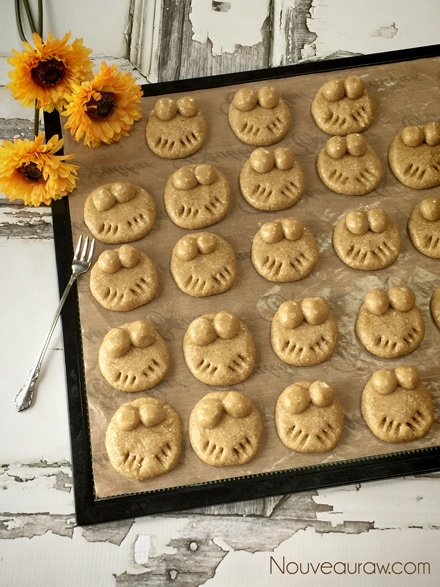
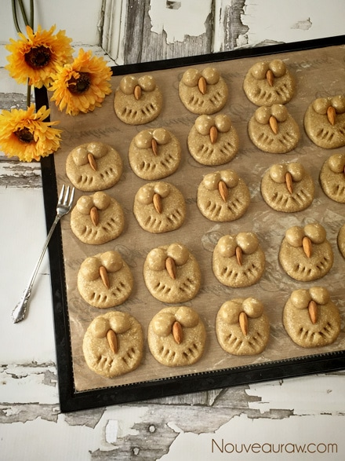
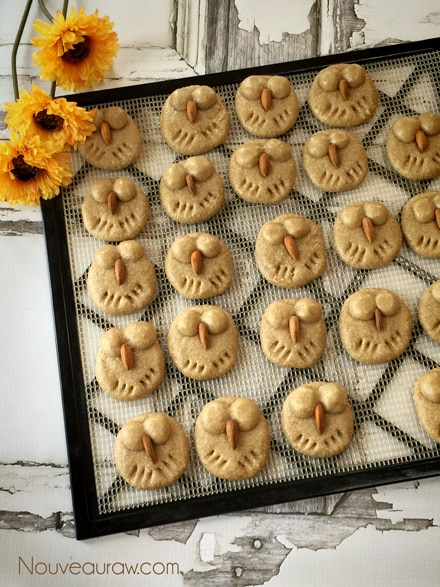
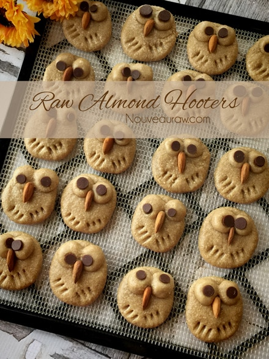

Almond Hooter Cookies

~ raw, vegan, gluten-free ~
This Almond Hooter Cookie was inspired by and for my sweet little sister who is going crazy over owls these days. I love her to death and can’t wait to surprise her with these fun little gems.
She lives thousands of miles away but in 2 days I will be able to see her as I am visiting my hometown. I hope they survive the airplane ride. They will travel on my lap if they have to just to ensure their safety. The picture above was taken this last summer.
Recipe update 5/21/15 I made this recipe today and made a few modifications to the recipe… taking new photos and simplifying things. The ingredient list and measurements didn’t change.
Since my original posting of this recipe back in January of 2011, my sister has lost her love-affair for all-things-hooting. lol, She still loves them but doesn’t want anymore owl gifts. It’s funny how that happens. You mention to someone that you like something and all of a sudden you are a collector. :)
This happened my aunt many years ago when she remarked how she just loved ducks. I kid you not, soon her house was filled with ducks… towels with ducks, mugs with ducks, little ceramic ducks… you name it, she had it. People just kept buying her duck stuff based on that ONE sentence. lol, The only ducks that she likes now are the ones that she feeds down at the park. :)
These cookies are as adorable in person as they are in the photo. You just can’t help but smile when you make them. They go together very easily and would be a great “project” for you and young ones. I hope you enjoy this recipe and please let me know how it goes. Blessings, amie sue
 Ingredients:
Ingredients:
Yields 22 hooters
- 3 cups gluten-free, rolled oats
- 1 tsp Himalayan pink salt
- 1 cup raw cashew butter
- 1/2 cup raw agave nectar
- 1/4 cup raw honey or coconut nectar
- 1/4 cup raw cold pressed coconut oil, melted
- 1 1/2 tsp vanilla extract
- Chocolate chips – for eyes
- Whole almonds – for nose
Preparation:
- In a food processor, fitted with the “S” blade, combine the oats and salt. Process until the oats are broken down to a small crumble / flour-like texture.
- Remove the lid and add the cashew butter, agave, honey, coconut oil, and vanilla. Process until the dough collects into a ball as it spins.
- If the dough remains crumbly, add a tablespoon of water.
- Create 28 cookies with a 2 Tbsp cookie measuring scoop. Place them on a non-stick sheet and flatten them.
- Take 6 of the cookies and cut them into 8 equal, pie shape pieces.
- For the eyes, roll each one into a ball and place two on each cookie for eyes. I have photos to below to help. Do not flatten them.
- For the feet, take a small fork and make two indentions where the feet are.
- For the nose, press a whole almond into the center of the cookie with the pointy end facing downward (see photo)
- Transfer the owls to the mesh sheet that comes with the dehydrator tray and dehydrate at 145 degrees for 1 hour, then reduce to 115 degrees (F) and continue drying for about 8 hours.
- After they are dry, press the chocolate chips into the two small dough balls, pointy end of the chocolate chips facing downward.
- Have fun and place them in different spots as though they are looking around.
- If you use store-bought chocolate chips you add them before they go into the dehydrator.
- If the chips are raw, they will melt while you are dehydrating the cookies.
- Store in a single layer in an airtight container.
I wanted to give you a visual on what the dough looked like.

Create all the cookie balls first.

Then lightly flatten all of them.

Create the eyes.

Place two balls on each cookie but don’t flatten or press down
on them. Then create the feet marking with the tip of the fork prongs.

Add the whole almond making sure the pointy end is pointing
downward. Nestle them right up between the eyes.

This is after I took them out of the dehydrator… they look like they
are sleeping.

Now it’s time for them to open their eyes… Wake up lil Hooter.

© AmieSue.com